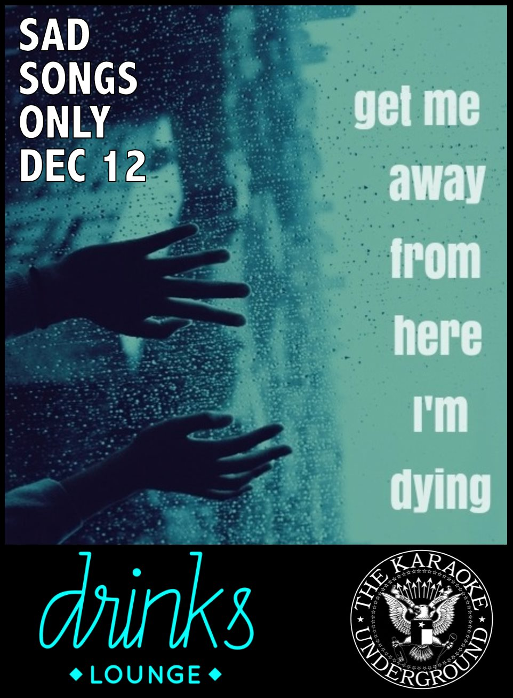

The sadder the song, the better the song – that’s the motto at SAD SONGS ONLY. This is the 6th year we’ve done this special show and it’s become my favorite night of KU. See below for 2018’s full list of SAD SONGS, we’ll have some new additions that fit the theme of gloom, doom and a healthy shake of venomous spite. December again has a few extra shows in addition to our regular 1st Saturdays at Knomad and 3rd Saturdays at Indian Roller, starting tonight at Knomad, Saturday, 12/7!
Saturday, 12/7 @ Knomad
Thursday, 12/12 @ Drinks Lounge – 6th Annual SAD SONGS ONLY
Saturday, 12/21 @ Indian Roller
Wednesday, 12/25 @ Hole In The Wall – Karaoke Armageddon for Christmas!
Saturday, 12/28 @ Indian Roller, JenHeartsArt birthday party!
NEW SONGS
Against Me! – Reinventing Axl Rose
Crooked Fingers – Sleep All Summer
Mitski – Nobody
Piebald – American Hearts
Saves The Day – Shoulder To The Wheel
Elliott Smith – Strung Out Again
Spanish Love Songs – The Boy Considers His Haircut
Tiny Moving Parts – Caution
As always, KU loves to play your party, rock your benefit show and help make your celebrations incredible, let’s work it out!
k+h
the ku
2019 songlist, it’s got 35 more than last year!
Artist – Title
6ths feat. Mary Timony – All Dressed Up In Dreams
Adams, Ryan – Come Pick Me Up
Adams, Ryan – Magnolia Mountain
Adams, Ryan – To Be Young (Is To Be Sad, Is To Be High)
Against Me! – FuckMyLife666
Against Me! – True Trans Soul Rebel
Air Miami – I Hate Milk
Alkaline Trio – San Francisco
Allo Darlin’ – My Heart Is A Drummer
American Football – Never Meant
American Nightmare – AM/PM
Andrew Jackson Jihad – Hate, Rain On Me
Arcade Fire – Modern Man
Arcade Fire – Neighborhood #1 (Tunnels)
Arcade Fire – Neighborhood #2 (Laika)
Arcade Fire – Neighborhood #3 (Power Out)
Archers Of Loaf – Wrong
At The Drive-in – Napoleon Solo
Bad Books – Pyotr
Baker, Julien – Sour Breath
Band Of Horses – The Funeral
Bell, Chris – I Am The Cosmos
Belle & Sebastian – Get Me Away From Here, I’m Dying
Belle & Sebastian – Lazy Line Painter Jane
Big Boys – Sound On Sound
Big Star – Thirteen
Bikini Kill – Feels Blind
Black Flag – Depression
Black Heart Procession – A Light So Dim
Black Heart Procession – Square Heart
Blonde Redhead – 23
Blood Brothers – Love Rhymes With Hideous Car Wreck
Bonnie ‘Prince’ Billy – I See A Darkness
Bottle Rockets – Thousand Dollar Car
Boygenius – Bite The Hand
Boygenius – Me & My Dog
Breeders – Drivin’ On 9
Bridgers, Phoebe – Motion Sickness
Bright Eyes – Lover I Don’t Have To Love
Bright Eyes – Method Acting
Bright Eyes – Papa Was A Rodeo (by Magnetic Fields)
Callahan, Bill – Too Many Birds
Camera Obscura – Lloyd I’m Ready To Be Heartbroken
Camper Van Beethoven – All Her Favorite Fruit
Car Seat Headrest – Unforgiving Girl (She’s Not An)
Cat Power – Nude As The News
Cayetana – Scott Get The Van, I’m Moving
Come – Shoot Me First
Converge – Homewrecker
Crass – Systematic Death
Crooked Fingers – New Drink For The Old Drunk
Crooked Fingers – Sleep All Summer
Cure – Boys Don’t Cry
Cursive – Art Is Hard
Dacus, Lucy – I Don’t Wanna Be Funny Anymore
Decemberists – The Chimbley Sweep
Desaparecidos – Man And Wife, The Latter (Damaged Goods)
Descendents – Clean Sheets
Detroit Cobras – He Did It (by The Ronettes)
DEVO – Beautiful World
Dinosaur Jr – Just Like Heaven (by The Cure)
Dismemberment Plan – The Ice Of Boston
Dismemberment Plan – Time Bomb
Distillers – City Of Angels
Dream Syndicate – Tell Me When It’s Over
Dum Dum Girls – Coming Down
Dum Dum Girls – It Only Takes One Night
Eisley – Real World
Erickson, Roky – You Don’t Love Me Yet
Foxygen – San Francisco
Frankie Cosmos – Young
Frightened Rabbit – Head Rolls Off
Front Bottoms – Twin Size Mattress
Frost, Edith – Cars And Parties
Gary, The – (Eyes In The) Tap Room
Get Up Kids – Holiday
Get Up Kids – Ten Minutes
Golightly, Holly – There’s An End
Good Life – Lovers Need Lawyers
Good Riddance – Better
Grifters – Bummer
Guided By Voices – Game Of Pricks
Handsome Family – Weightless Again
Heartless Bastards – The Mountain
Heatmiser – Antonio Carlos Jobim
Helium – Honeycomb
Hop Along – Tibetan Pop Stars
Hot Water Music – Not For Anyone
Hot Water Music – Trusty Chords
Hüsker Dü – Makes No Sense At All
Hüsker Dü – Never Talking To You Again
Inspiral Carpets – This Is How It Feels
Interpol – Leif Erikson
Interpol – NYC
Jawbox – Savory
Jawbreaker – Do You Still Hate Me?
Jets To Brazil – Chinatown
Jets To Brazil – Sweet Avenue
Jim Carroll Band – People Who Died
Joy Division – Dead Souls
Joy Division – Insight
Joy Division – Love Will Tear Us Apart
Joy Division – Twenty Four Hours
La Dispute – Such Small Hands
Lagwagon – Sick
Lekman, Jens – I’m Leaving You Because I Don’t Love You
Lekman, Jens – The Opposite Of Hallelujah
Lewis, Jenny – The Big Guns
Low – Just Make It Stop
Lush – Light From A Dead Star
Magnetic Fields – All The Umbrellas In London
Magnetic Fields – Busby Berkeley Dreams
Magnetic Fields – Grand Canyon
Magnetic Fields – The Saddest Story Ever Told
Magnolia Electric Co. – The Dark Don’t Hide It
Marked Men – Fix My Brain
Meat Puppets – Plateau
Menzingers – I Don’t Wanna Be An Asshole Anymore
Mineral – Parking Lot
Minutemen – Jesus & Tequila
Mitski – i will
Mitski – Nobody
Modern Baseball – Fine, Great
Modest Mouse – Baby Blue Sedan
Modest Mouse – Bankrupt On Selling
Modest Mouse – Dark Center Of The Universe
Modest Mouse – Dramamine
Modest Mouse – You’re The Good Things (It’s Alright To Die)
Mogwai – R U Still In 2 It?
Mountain Goats – Against Pollution
Mountain Goats – Cotton
Mountain Goats – Cry For Judas
Mountain Goats – Dance Music
Mountain Goats – No Children
Mr. T Experience – Sackcloth And Ashes
Nastasia, Nina – A Dog’s Life
Neutral Milk Hotel – Communist Daughter
Neutral Milk Hotel – In The Aeroplane Over The Sea
New Order – 1963 (’95)
New Order – Love Vigilantes
New Pornographers – Challengers
Newsom, Joanna – Clam, Crab, Cockle, Cowrie
Newsom, Joanna – The Book Of Right-On
No Use For A Name – Justified Black Eye
Numan, Gary (Tubeway Army) – Me! I Disconnect From You
Okkervil River – Black
Okkervil River – Westfall
Old 97’s – Big Brown Eyes
Olsen, Angel – Never Be Mine
Owen – O, Evelyn
Palace Brothers – For The Mekons, et al
Palmer, Amanda – The Bed Song
Parenthetical Girls – A Song For Ellie Greenwich
Pogues – Thousands Are Sailing
Popper Burns – Sunday
Postal Service – Brand New Colony
Postal Service – Nothing Better
Poster Children – Rain On Me
Pretty Girls Make Graves – Sad Girls Por Vida
Promise Ring – A Picture Postcard
Pulley – Second Best
Pulp – Disco 2000
Pulp – Like A Friend
Pup – DVP
Quasi – The Poisoned Well
Quiet Company – The Easy Confidence
Rainer Maria – The Reason The Night Is Long
Rilo Kiley – A Better Son/Daughter
Rilo Kiley – More Adventurous
Rilo Kiley – Science Vs. Romance
Rutabega – Come Back Big Brother
Rutabega – Shiny Destination
Saves The Day – At Your Funeral
Sebadoh – Brand New Love (acoustic)
Sebadoh – Pink Moon (by Nick Drake)
Sebadoh – Too Pure
Shannon & The Clams – Baby Don’t Do It
Shannon & The Clams – Point Of Being Right
Shearwater – Century Eyes
Silkworm – Couldn’t You Wait
Silver Jews – Punks In The Beerlight
Silver Jews – Random Rules
Sleater-Kinney – Buy Her Candy
Sleater-Kinney – Dig Me Out
Sleater-Kinney – Jumpers
Sleater-Kinney – One More Hour
Small Brown Bike – Like A Future With No Friend
Smith, Elliott – Baby Britain
Smith, Elliott – Ballad Of Big Nothing
Smith, Elliott – King’s Crossing
Smith, Elliott – Miss Misery
Smith, Elliott – Strung Out Again
Smith, Elliott – Twilight
Smith, Elliott – Waltz #2 (XO)
Smiths – Girlfriend In A Coma
Smog – Bathysphere
Smog – I Was A Stranger
Songs: Ohia – I’ve Been Riding With The Ghost
Songs: Ohia – Just Be Simple
Songs: Ohia – Lioness
Songs: Ohia – Tigress
Spanish Love Songs – The Boy Considers His Haircut
Spiritualized – The Straight & The Narrow
Spoon – 10:20 a.m.
Spoon – Advance Cassette
Spoon – Anything You Want
Spoon – Don’t Let It Get You Down
Spoon – Laffitte Don’t Fail Me Now
St. Vincent – Cheerleader
Stevens, Sufjan – Chicago
Stevens, Sufjan – John Wayne Gacy, Jr.
Sun Kil Moon – Carry Me Ohio
Sun Kil Moon – Salvador Sanchez
Sunny Day Real Estate – In Circles
Sunny Day Real Estate – Seven
Swearin’ – Kenosha
They Might Be Giants – Nightgown Of The Sullen Moon
Title Fight – Numb, But I Still Feel It
Two Nice Girls – I Spent My Last US$10.00(On Birth Control And Beer)
Uncle Tupelo – No Depression
Van Etten, Sharon – Your Love Is Killing Me
Vandals – My Girlfriend’s Dead
Vanderslice, John – Exodus Damage
Vega, Suzanne – Left Of Center
Veirs, Laura – Galaxies
Velocity Girl – Pop Loser
Velvet Underground – All Tomorrow’s Parties
Velvet Underground – Femme Fatale
Walkmen – Thinking Of A Dream I Had
Waxahatchee – Poison
Weakerthans – Aside
Weakerthans – Tournament Of Hearts
Weakerthans – Virtute The Cat Explains Her Departure
Ween – Chocolate Town
What Made Milwaukee Famous – Selling Yourself Short
Whiskeytown – Excuse Me While I Break My Own Heart Tonight
Wilco – Passenger Side
Wye Oak – Civilian
Wye Oak – I Hope You Die
Yo La Tengo – Autumn Sweater